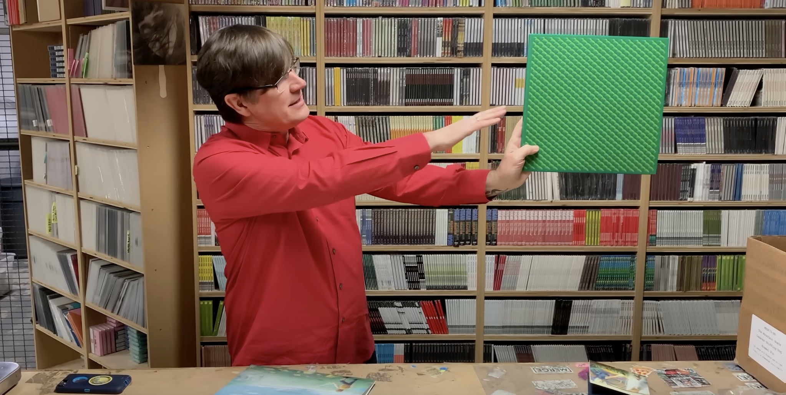

library(spotifyr) # install.packages("spotifyr")
access_token <- get_spotify_access_token()
tl;dr
You can generate text using the {markovifyR} package. Why not do it for lyrics collected with The {spotifyr} package? And why not do it for a band with a huge back catalogue like The Mountain Goats?
In League with Dragons
The Mountain Goats released In League with Dragons today, their seventeenth studio album.
John Darnielle has written a lot of words across the Mountain Goat’s back catalogue. His lyrics are poetic and descriptive, covering fictional and autobiographical themes that include substance abuse, professional wrestling and cadaver-sniffing dogs.
Can we generate new Mountain Goats lyrics given this rich text data set? This is a short post to do exactly that using the {spotifyr}, {genius} and {markovifyR} packages for R.
Hit play below while reading to generate the right mood.
Get lyrics
The {spotifyr} package pulls artist and album information from the music streaming service Spotify, along with some interesting audio features like ‘danceability’ and ‘acousticness’. It also fetches lyrics from Genius via the {genius} package .
First get a developer account for the Spotify API. Run usethis::edit_r_environ() and add your client ID and secret in the form SPOTIFY_CLIENT_ID=X and SPOTIFY_CLIENT_SECRET=Y. The get_spotify_access_token() function will add an access token to your environment, which will authenticate each API request.
The get_discography() function fetches a named artist’s back-catalogue, including the lyrics. Beware: this may include some duplicates from different regions or because of reissues or deluxe versions.
goat_discography <- spotifyr::get_discography("the mountain goats")You can run the line above, or you can just use download.file() to get an RDS version stored on rostrum.blog (note that this file will become out of date as the Mountain Goats release more material, which they frequently do!).
I’ve done this already and saved the file for future use. I’ll read that in now:
[1] 399 41This is a relatively wide data frame with 41 columns of data for nearly 400 songs. Let’s simplify the columns and for fun we can look at five random sings and their ‘energy’.
library(dplyr) # for data manipulation and %>%
goat_disco <- goat_discography %>%
ungroup() %>%
select(
album_name, album_release_year, # album
track_name, track_number, duration_ms, # track info
key_name, mode_name, key_mode, tempo, time_signature, # music info
danceability, energy, loudness, mode, speechiness, # audio features
acousticness, instrumentalness, liveness, valence, # audio features
lyrics
)
sample_n(goat_disco, 5) %>%
select(album_name, track_name, energy) # a sample# A tibble: 5 × 3
album_name track_name energy
<chr> <chr> <dbl>
1 Heretic Pride Michael Myers Resplendent 0.269
2 Bitter Melon Farm The Bad Doctor 0.459
3 Heretic Pride Autoclave 0.781
4 Zopilote Machine Alpha Incipiens 0.713
5 Sweden Tollund Man 0.513I’ll be saving this data frame for some other analysis, but for now we’ll need only the lyrics. The lyrics are stored in a list-column as a separate tibble (data frame) per song.
library(tidyr) # for unnest()
goat_lyrics <- goat_disco %>%
filter(lyrics != "NULL") %>% # remove rows where lyrics weren't collected
unnest(lyrics) %>% # unpack the lyrics list-column
filter(!is.na(lyric)) %>% # remove empty lyrics
select(-line) %>% # unneeded column
group_by(lyric) %>% slice(1) %>% ungroup() %>% # remove duplicate lyrics
pull(lyric) # convert column to character vector
sample(goat_lyrics, 10) # a sample [1] "Say that the time is near"
[2] "And watch for the cars"
[3] "Never forget what it felt like to live in rooms like these"
[4] "Grow fat and grow old and go blind and be content"
[5] "He made a banquet for the stray dogs of the air"
[6] "Sky grey and misty"
[7] "Swing low sweet chariot"
[8] "From the fragile outline of your hips"
[9] "But as the sun becomes a blazing orange ball of fire"
[10] "I hear your voice getting stronger and louder" Generate lyrics
We can use a Markov chain to generate new lyrics based on our data set. Basically, it will predict the next word from the current one based on the likelihood from our input data set. You can read more about this principle elsewhere.
The {markovifyR} package is a wrapper for the Python package markovify, which ‘is a simple, extensible Markov chain generator’. You can install markovify at the command line via R’s system() function, then install {markovifyR} from GitHub and {furrr} from CRAN.
# system("pip3 install markovify")
library(markovifyR) # remotes::install_github("abresler/markovifyR")
library(furrr) # install.packages("furrr")Now we can generate the model given all the lyrics.
markov_model <- generate_markovify_model(
input_text = goat_lyrics,
markov_state_size = 2L,
max_overlap_total = 25,
max_overlap_ratio = 0.7
)You can meddle with these controls, but I’ve kept to the suggested defaults for now. Note that ‘overlap’ relates to the likelihood of generating whole sentences that already exist. See markovify for more detail.
Generate lines
Use the markovify_text() function with our markov_model object to generate single lines.
Fans of the Mountain Goats will no doubt recognise some of the phrases from existing songs.
goat_speak <- markovify_text(
markov_model = markov_model,
maximum_sentence_length = NULL,
output_column_name = 'goat_speak',
count = 5,
tries = 100,
only_distinct = TRUE,
return_message = TRUE
)goat_speak: Like a trashcan fire in a folding chair
goat_speak: Darkness climbing up the variables
goat_speak: And when the rain on our tongues
goat_speak: Wear black back to where I go, do what you said that you make
goat_speak: I know you're leaving tooI ran this function a few times and here a few outputs that made me laugh (or think):
- But I felt all the Portuguese water dogs?
- I write reminders on my kimono that I could not remember
- Leann Rimes on the ocean
- Sunset spilling through your megaphone
- It’s the most gorgeous cow I’d ever wanted
- I hope I never liked Morrissey
- Went and got the case of vodka from a disco in old east Berlin
- Fresh coffee at sunrise, warm my lips like a dying man
- But my love is like a tattoo into my ear
- And you brought me a bowl of cooked wild grasses
- We had hot caramel sticking to her skin
- And then the special chicken
- And a bird we would have liked brought the Norman invasion
- How come there’s peacocks in the face of the rainbow
Generate a verse
You can also choose to seed the first word in the sentence. You can do this in such a way that you can create a sort-of possible-sounding stanza.
goat_speak <- markovify_text(
markov_model = markov_model,
maximum_sentence_length = NULL,
output_column_name = 'goat_lyric',
start_words = c("I", "And", "But", "So"),
count = 1,
tries = 100,
only_distinct = TRUE,
return_message = TRUE
)goat_lyric: I was sure my heart and I should have said something evil and then orange then opting for secession
goat_lyric: And I will walk down to the main square
goat_lyric: But I knew you were knocking
goat_lyric: So you can breathe now…or not.
I think John Darnielle probably remains the best generator of Mountain Goats lyrics for now.
Further reading
To learn more about the band:
Environment
Session info
Last rendered: 2023-08-02 16:31:10 BSTR version 4.3.1 (2023-06-16)
Platform: aarch64-apple-darwin20 (64-bit)
Running under: macOS Ventura 13.2.1
Matrix products: default
BLAS: /Library/Frameworks/R.framework/Versions/4.3-arm64/Resources/lib/libRblas.0.dylib
LAPACK: /Library/Frameworks/R.framework/Versions/4.3-arm64/Resources/lib/libRlapack.dylib; LAPACK version 3.11.0
locale:
[1] en_US.UTF-8/en_US.UTF-8/en_US.UTF-8/C/en_US.UTF-8/en_US.UTF-8
time zone: Europe/London
tzcode source: internal
attached base packages:
[1] stats graphics grDevices utils datasets methods base
other attached packages:
[1] purrr_1.0.1 furrr_0.3.1 future_1.33.0 markovifyR_0.102
[5] tidyr_1.3.0 dplyr_1.1.2 readr_2.1.4 spotifyr_2.2.4
loaded via a namespace (and not attached):
[1] utf8_1.2.3 generics_0.1.3 xml2_1.3.5 lattice_0.21-8
[5] stringi_1.7.12 listenv_0.9.0 hms_1.1.3 digest_0.6.33
[9] magrittr_2.0.3 grid_4.3.1 evaluate_0.21 timechange_0.2.0
[13] fastmap_1.1.1 rprojroot_2.0.3 Matrix_1.5-4.1 jsonlite_1.8.7
[17] httr_1.4.6 rvest_1.0.3 fansi_1.0.4 codetools_0.2-19
[21] cli_3.6.1 crayon_1.5.2 rlang_1.1.1 parallelly_1.36.0
[25] withr_2.5.0 yaml_2.3.7 tools_4.3.1 parallel_4.3.1
[29] tzdb_0.4.0 here_1.0.1 globals_0.16.2 reticulate_1.30
[33] curl_5.0.1 assertthat_0.2.1 png_0.1-8 vctrs_0.6.3
[37] R6_2.5.1 lifecycle_1.0.3 lubridate_1.9.2 snakecase_0.11.0
[41] stringr_1.5.0 htmlwidgets_1.6.2 janitor_2.2.0 pkgconfig_2.0.3
[45] pillar_1.9.0 Rcpp_1.0.11 glue_1.6.2 xfun_0.39
[49] tibble_3.2.1 tidyselect_1.2.0 rstudioapi_0.15.0 knitr_1.43.1
[53] htmltools_0.5.5 rmarkdown_2.23 compiler_4.3.1 Reuse
CC BY-NC-SA 4.0